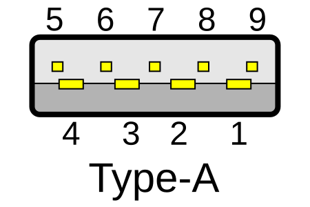
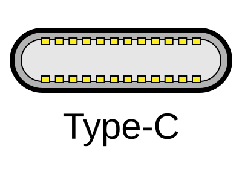
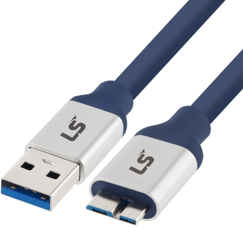
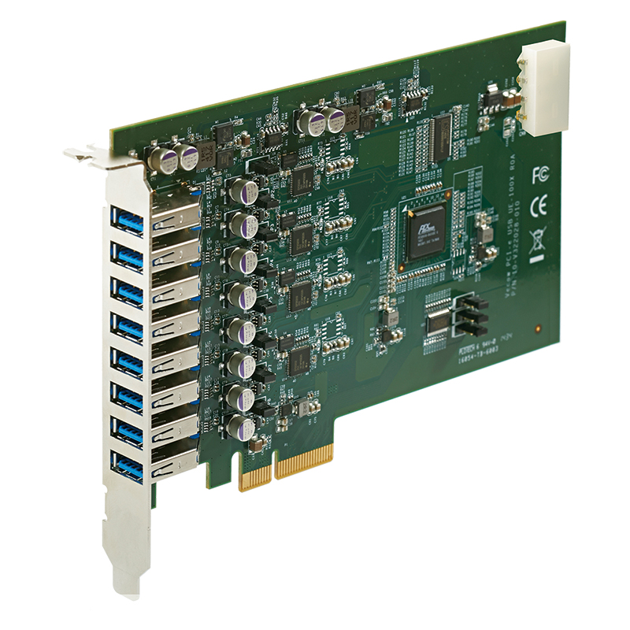
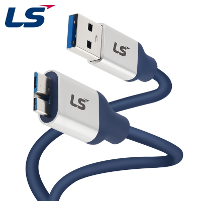

1. 시스템과 시험 구성
1.1 Problem Definition & Test Sequence
양팔 로봇의 말단 가까이에서는 파지점과 재료의 변형을 봐야 하고, 외부에서는 두 팔과 작업 공간 전체를 함께 봐야 했습니다. 이 시야를 한 PC로 모으려면 카메라 여러 대의 RGB 또는 Depth를 동시에 수집할 수 있어야 했습니다. PC의 USB 포트 수는 부족했고, 허브로 늘린 뒤에도 영상 지연과 미출력이 발생했습니다.
제가 확인할 질문은 세 가지였습니다. 첫째, 지정한 해상도·FPS·stream 조합에서 사용할 수 있는 카메라는 몇 대인가. 둘째, 같은 대수인데도 포트와 케이블을 바꾸면 왜 결과가 달라지는가. 셋째, 실제 로봇의 배선 길이와 움직임을 만족하면서 카메라를 연결할 방법은 무엇인가.
| 단계 | 변경한 요소 | 판단할 질문 |
|---|---|---|
| 1차 — USB hub | 직결과 허브, 포트, Depth·해상도·FPS | 포트 부족을 허브로 보완할 때 usable stream 수는 어떻게 달라지는가 |
| 2차 — PCIe expansion | UE-1008 장착, 본체와 확장보드로 분산 | 허브 공유를 줄이면 좋아지는가. 어느 장치를 어느 경로에 둘 것인가 |
| 3차 — 실제 프레임·장거리 배선 | 말단·프레임 장착, 약 5 m 연장·리피터 | 벤치에서 만든 구성이 실제 배선에서도 SuperSpeed와 영상을 유지하는가 |
| 4차 — 케이블 재선정 | D405 / D435IF별 장거리 케이블 교체 | 적절한 링크를 회복하고 MiMicX에서 필요한 영상을 사용할 수 있는가 |
시험·PCIe 보드와 카메라 프레임 장착, 포트·케이블 변경을 직접 수행했습니다. 연결 문제를 분석하며 카메라별 케이블을 선정했고, 카메라 위치·포트 분산·profile 구성안을 마련해 그룹장 승인을 받아 적용했습니다.
1.2 Test Hardware & Physical Layout
| 구분 | 사용한 구성 | 이 시험에서의 역할 |
|---|---|---|
| PC | Intel Core i5-14600K / RTX 5060 8GB / DDR5 16GB | 여러 카메라의 영상을 받고 Viewer·MiMicX에서 출력 |
| Mainboard / storage | ASUS PRIME B760-PLUS / WD Black SN850X M.2 1TB | 본체 USB 경로와 PCIe 확장 슬롯 제공 |
| Cameras | D405 ×2 / D435IF ×6 — 전체 시험 대상 | 기종·배치·profile에 따라 조합을 바꿔 시험 |
| USB hubs | 홈플래닛 허브 / NEXTU USB 3.0 7포트 유전원 허브 | 제한된 포트 수를 늘리는 첫 구성 |
| PCIe board | UE-1008, PCIe x4 인터페이스 / USB 3.0 8포트 | 본체와 별도 확장 경로에 카메라 분산 |
| Software | librealsense / RealSense Viewer / MiMicX | 장치·stream 확인과 실제 사용할 application 경로 확인 |
D405 두 대는 양팔 엔드툴에, D435IF는 톤백 배경 프레임에 배치했습니다. 초기 프레임 장착은 D405 두 대와 D435IF 세 대였습니다. 전체 시험 장비 여덟 대, 초기 장착 다섯 대, 이후 동시 stream 시험의 여섯 대는 서로 다른 구성입니다.
카메라 프레임을 먼저 고정하고 그리퍼를 장착해야 했으며, 알맞은 볼트와 육각렌치로 체결했습니다. 말단의 카메라는 로봇과 함께 움직이기 때문에 케이블 체결과 반복 굽힘도 고려해야 했습니다. 짧은 케이블로 책상에서 성공한 연결을 실제 프레임에서 그대로 쓸 수 없는 이유였습니다.
1.3 D405 & D435IF: Different Views and Interfaces

PC 본체·허브·PCIe 보드 쪽에 연결한 직사각형 단자입니다. 파란색만으로 실제 연결 속도를 판정하지 않습니다.
Andreas Pietzowski · Niridya / Wikimedia Commons · CC BY-SA 3.0

D435IF 쪽의 타원형 단자입니다. 같은 USB-C 외형이라도 데이터 속도와 지원 기능은 케이블 사양을 확인해야 합니다.
Andreas Pietzowski · Niridya / Wikimedia Commons · CC BY-SA 3.0

사진 오른쪽의 넓고 두 부분으로 나뉜 단자가 USB 3 Micro-B입니다. USB 2.0 Micro-B와 외형이 다르며 D405 배선에 사용했습니다.
| 항목 | D405 | D435IF |
|---|---|---|
| 관찰 역할 | 손끝 가까이의 파지와 재료 | 외부에서 전체 작업 공간과 양팔 관계 |
| 시야의 성격 | 근거리 stereo depth에 적합한 소형 구성 | 더 넓은 작업 공간을 보는 D435 계열 |
| Color 경로 | Left imager 기반 color | 별도 RGB sensor |
| RGB 최대 해상도 | 1280×720 | 1920×1080 |
| USB connector | USB 3 Micro-B | USB-C |
| 모델의 구분 | 근접 관찰 | IR-pass filter와 IMU를 갖는 D435IF |
| Stereo baseline | 18 mm | 50 mm |
| Depth FOV · HD / H×V | 84° × 58° | 87° × 58° |
| Color FOV / H×V | 84° × 58° | 69° × 42° |
| IR projector | 없음 | Wide IR projector |
| IMU | 없음 | 6DoF · Gyro / Accelerometer |
두 기종은 같은 D400 계열이어도 역할과 영상 경로가 다릅니다. D405의 near view를 D435IF로 단순 대체하거나, D435IF의 최대 RGB profile을 D405에 그대로 적용할 수 없습니다. 근거리용 카메라와 전체 시야용 카메라를 혼합한 상태에서 연결 용량을 확인해야 했습니다.[RS-DATASHEET]
D435IF의 IR-pass filter는 반사나 반복 패턴으로 인한 depth 문제를 다루기 위한 제품 특성입니다. 이 시험에서는 필터 성능이나 IMU 정확도를 별도로 평가한 것이 아니라, 필요한 관찰 역할과 실제 제공되는 USB stream을 기준으로 사용했습니다. 카메라별 광학 특성과 USB의 수용 능력은 나누어 판단했습니다.[RS-D435IF]
배선에서는 D405의 Micro-B와 D435IF의 USB-C에 맞는 케이블을 각각 찾아야 했습니다. 특히 D405는 말단에서 움직이는 연결이므로 단순히 connector가 맞는 케이블보다 체결·굽힘 조건까지 중요했습니다. 이 차이가 뒤의 High-Flex 케이블 선정으로 이어졌습니다.
Depth 시야와 RGB 시야를 구분
D400 데이터시트의 SKU 표에서 D405와 D435IF의 Depth FOV는 각각 84°×58°, 87°×58°입니다. 하지만 Color FOV는 각각 84°×58°, 69°×42°로 다릅니다. 따라서 D435IF가 “모든 영상에서 더 넓은 카메라”인 것은 아닙니다. 이 테스트베드에서 전체 작업 공간을 보는 역할은 카메라의 설치 거리·위치와 관찰 범위를 함께 정한 결과였습니다. 표의 FOV는 제조사 조건의 nominal 값이며 해상도·종횡비와 허용차도 함께 봐야 합니다.[RS-DATASHEET]
IR-pass의 이점과 trade-off
D435IF의 IR-pass 필터는 depth용 stereo lens 앞의 가시광 성분을 줄여 IR projector 패턴을 상대적으로 두드러지게 합니다. 데이터시트는 projector와 RGB sensor 부분에 개구가 있음을 명시하므로, 이 필터가 RGB 영상까지 모두 적외선 영상으로 바꾸는 것은 아닙니다. 저는 필터와 USB 영상 경로를 구분해 카메라의 특성을 이해했습니다.[RS-DATASHEET]
| 장면 / 항목 | IR-pass에서 기대하거나 주의할 점 |
|---|---|
| 가시광 반사·반복 수직 패턴 | 반사와 반복 패턴 때문에 생기는 false depth를 줄이는 데 이점 |
| Texture가 적은 실내 장면 | projector 패턴이 상대적으로 중요해지며 장면에 따라 유리할 수 있음 |
| 실내의 texture 있는 물체·벽 | 가시광 texture를 쓰는 All-pass 쪽이 더 좋은 조건도 있음 |
| 노출·움직임·frame rate | 수광량 감소로 노출이 길어지면 움직임과 frame rate에 영향 가능 |
| 깊이 경계·거리·재질 | projector 출력과 재질의 IR 반사에 영향을 받으며, 경계 품질이나 depth hole에 trade-off |
| Calibration | 추가 IR 조명이 필요한 조건이 있을 수 있음 |
이 비교는 제조사 Launch 자료의 광학적 설명이며, 제가 톤백에서 필터별 성능 비교 시험을 했다는 결과는 아닙니다. 다만 카메라 모델의 이점을 이해하고, 연결 시험에서 보이는 FPS·미출력 문제와 광학 조건을 섞어 판단하지 않는 데 필요한 기준이었습니다.[RS-LAUNCH]
2. 기술적 기초
2.1 USB 2.0 vs USB 3.0: Why the Link Can Fall Back
USB 2.0은 D+와 D− 차동쌍을 사용하며 High-Speed의 공칭 속도는 480 Mbit/s입니다. USB 3.0 / USB 3.1 Gen 1은 기존 경로에 SuperSpeed Tx/Rx 차동쌍을 추가하고 5 Gbit/s의 신호 속도를 사용합니다. 송수신 경로가 분리되며, USB 2.0과 호환되는 경로는 남아 있습니다.[USB-SS]
차동 전송은 두 선의 차이를 이용합니다. 두 선에 동일하게 유입된 잡음은 차를 구할 때 줄어들지만, pair의 비대칭·접속부·손실이 없어지는 것은 아닙니다. USB 3.x의 고속 신호 경로를 유지하려면 connector 모양뿐 아니라 해당 차동 경로의 품질이 필요합니다.
따라서 카메라가 발견됐다고 SuperSpeed가 확보된 것은 아닙니다. D435IF가 USB 2.x 경로로 연결되면 장치가 목록에 보이더라도 사용 가능한 RGB·Depth 조합은 줄어듭니다. 초기 기록의 “USB 2.1” 표시는 이 USB 2.x 연결 상태로 구분하고, 별도의 2.1 Gbit/s 속도로 해석하지 않았습니다.
Gen 1의 8b/10b 인코딩만 고려해도 5 Gbit/s 전체가 영상 payload로 전달되지는 않습니다. 여기에 패킷과 제어·스케줄링 비용이 더해집니다. 그래서 영상 데이터량을 계산할 때 공칭 속도와 직접 같은 값처럼 비교하지 않았습니다.[USB-SS]
USB 2.x에서 줄어드는 실제 profile 조합
USB 2.x 연결의 결과는 공칭 속도 감소뿐 아니라 SDK가 열 수 있는 profile의 변화입니다. 2025년 8월 데이터시트의 USB 3.1 Gen 1 / USB 2.0 표를 대조하면 다음과 같습니다. 각 행은 단일 stream의 지원 조합이며, 여러 stream의 동시 지원은 별도의 조건입니다.[RS-DATASHEET]
| 카메라 / stream | USB 3.1 Gen 1 FPS | USB 2.0 FPS |
|---|---|---|
| D435IF · Z16 depth · 1280×720 | 6 / 15 / 30 | 6 |
| D435IF · YUY2 color · 1280×720 | 6 / 15 / 30 | 6 / 15 |
| D435IF · YUY2 color · 640×480 | 6 / 15 / 30 / 60 | 6 / 15 / 30 |
| D405 · Z16 depth · 1280×720 | 5 / 15 / 30 | 5 |
| D405 · YUY2 color · 1280×720 | 5 / 15 / 30 | 5 / 10 / 15 |
이 비교로 D435 계열이 USB 2.x로 연결됐을 때 1280×720 color를 15 FPS 수준으로 낮추거나, 30 FPS를 쓰기 위해 해상도를 낮춰야 했던 관찰을 설명할 수 있습니다. 단일 stream에서 지원되는 최고 설정을 RGB+Depth 동시 사용이나 다중 카메라 전체에 그대로 적용해서는 안 됩니다.
같은 RealSense라도 UVC 구성이 다름
| 항목 | D405 / D401 | D435IF / D430 계열 |
|---|---|---|
| UVC interface | Depth와 Color가 같은 UVC interface에 매핑 | Depth와 Color가 별도 interface에 매핑 |
| Color format 예 | Left imager의 UYVY, ISP 경로의 YUY2 | 별도 RGB camera의 YUY2 |
| 동시 stream 판단 | Table 4-6과 해당 profile을 함께 확인 | Table 4-5와 해당 profile을 함께 확인 |
lsusb에 나타난 Video interface 수를 그대로 “활성 영상 stream 수”로 세지 않은 이유입니다. interface가 열거돼 있다는 것과 해당 profile을 실제로 전송하고 있다는 것은 다릅니다. 또한 제조사는 RGB–Depth 하드웨어 동기화에 동일 FPS 조건을 제시하지만, 이 테스트베드에서 모든 카메라의 하드웨어 동기화를 구현·검증한 것은 아닙니다.[RS-DATASHEET]
2.2 Host Controllers, Hubs & PCIe Paths
USB 허브는 downstream 포트를 늘리지만 그 장치들이 공유하는 upstream 경로까지 각각 새로 만들지는 않습니다. 유전원 허브는 전원 공급에 도움이 되더라도 각 카메라에 독립적인 5 Gbit/s 경로를 주는 장치는 아닙니다. RealSense 다중 카메라 가이드도 대역폭뿐 아니라 전원·Host 처리·케이블을 함께 고려합니다.[RS-MULTI]
| 요소 | 늘어나거나 바뀌는 것 | 여전히 확인할 것 |
|---|---|---|
| USB hub | 물리 connector 수, 유전원일 경우 전원 경로 | 상위 link 공유, 동시 stream 부하 |
| 본체의 여러 포트 | 사용 가능한 연결 위치 | 같은 controller / 내부 hub를 공유하는지 |
| PCIe USB board | 추가 controller와 확장 경로 | 포트별 controller 배치, 보드와 PCIe의 공유 자원 |
| SuperSpeed cable | 해당 장치의 고속 연결 가능성 | 다중 stream을 처리하는 application·Host 용량 |
UE-1008은 당시 사용한 사양 기준으로 USB 3.0 8포트와 네 개의 독립 controller를 제공하는 PCIe x4 카드였습니다. 비어 있던 x16 형태의 슬롯에 장착했습니다. 물리적으로 x16 슬롯에 들어갔다고 보드가 x16 대역으로 바뀌는 것은 아니므로 카드 인터페이스와 슬롯 크기는 구분했습니다.
실제 시험에서는 PCIe 포트 1–4번과 5–8번에 분산해야 하는 조건이 나타났습니다. 이 포트군은 재현할 연결 조건으로 기록했습니다. 두 포트군의 관찰만으로 내부 controller의 정확한 연결 관계를 확정하지는 않았습니다. 설명 가능한 공유 구조와 실제 확인한 포트 조합을 함께 남기는 것이 필요했습니다.
2.3 Bandwidth Derivation: From One Stream to a Camera Set
영상의 폭·높이·픽셀당 bit 수·FPS가 정해지면 압축하지 않은 stream의 payload를 계산할 수 있습니다. Depth의 Z16은 16 bit/pixel이고, YUY2·UYVY color는 YUV 4:2:2 packed format으로 평균 16 bit/pixel입니다. 아래 계산은 이 16-bit format을 가정합니다. SDK에서 RGB8로 변환한 24-bit 배열의 크기와 USB에 실린 원래 color payload는 구분해야 합니다.[RS-DATASHEET]
W·H는 pixel 단위 해상도, b는 bit/pixel, f는 frame/s입니다. 결과 단위는 bit/s이며 Mbit/s는 10⁶ bit/s로 계산했습니다. 여러 stream을 여는 경우 각각의 payload를 합산합니다.
| Profile | 계산 | Payload |
|---|---|---|
| 1280×720 @ 30 FPS | 1280 × 720 × 16 × 30 | 442.368 Mbit/s |
| 1280×720 @ 15 FPS | 1280 × 720 × 16 × 15 | 221.184 Mbit/s |
| 640×480 @ 30 FPS | 640 × 480 × 16 × 30 | 147.456 Mbit/s |
| 640×480 @ 15 FPS | 640 × 480 × 16 × 15 | 73.728 Mbit/s |
| 1920×1080 @ 30 FPS | 1920 × 1080 × 16 × 30 | 995.328 Mbit/s |
RGB와 Depth를 함께 켤 때
1280×720·30 FPS에서 color와 Depth를 각각 16-bit로 보내면 한 대의 두 stream은 442.368 + 442.368 = 884.736 Mbit/s입니다. 같은 기종이라도 RGB only인지 RGB+Depth인지에 따라 요구량이 달라집니다. camera count만 비교하면 이 차이가 사라집니다.
RGB only: 8 × 442.368 = 3538.944 Mbit/s
RGB + Depth: 8 × 884.736 = 7077.888 Mbit/sRGB+Depth 여덟 대를 단일 5 Gbit/s link에 모으는 가정은 payload만으로도 공칭 속도를 넘습니다. 반면 RGB only의 3.539 Gbit/s가 5 Gbit/s보다 작다고 해서 여덟 대가 보장되지는 않습니다. 인코딩·프로토콜 비용과 burst, 공유 경로, Host 처리 여유가 필요하기 때문입니다. 또한 여러 controller에 분산한 시스템 전체를 단일 5 Gbit/s link 하나로 보아서는 안 됩니다.
실제 저부하 여섯 대 조합의 계산
| 구성 | 계산 | 합계 |
|---|---|---|
| D405 ×2: 720p30 + D435 ×4: 480p30 | 2×442.368 + 4×147.456 | 1474.560 Mbit/s |
| D405 ×2: 720p30 + D435 ×3: 720p15 + D435 ×1: 480p15 | 2×442.368 + 3×221.184 + 73.728 | 1622.016 Mbit/s |
해상도와 FPS를 낮췄을 때 연결 조합이 달라진 이유를 payload 관점에서 이해할 수 있습니다. 다만 합계는 전체 부하의 설명값이며, 실제 수용 여부는 각 장치가 어느 link를 공유하는지에 따라 달라집니다. 모든 시험에서 wire format을 로그로 확인한 것은 아니므로 이 계산은 명시한 format의 이론적 산정으로 다룹니다.
2.4 Test Matrix & Observation Criteria
1차는 Depth 사용 여부, 최대·중간 해상도 수준, 15/30 FPS를 조합해 여덟 case로 나누었습니다. 당시 비교한 Depth 해상도 수준은 1280×720과 640×480, color 해상도 수준은 1920×1080과 1280×720이었습니다. 단, 1920×1080 color는 D435IF 쪽 조건이며 D405에 같은 최대값을 적용하지 않았습니다.
| 항목 | 기록할 값 | 비교하는 이유 |
|---|---|---|
| Camera / stream | 기종, RGB·Depth on/off, profile | 영상 역할과 부하를 특정 |
| Rate | 해상도·FPS·format | 해상도만 같아도 전송량은 달라질 수 있음 |
| Path | 직결·허브·PCIe, 포트와 분산 배치 | 상위 자원 공유를 바꿈 |
| Cable | connector, 길이, 연장·리피터·교체 형태 | link 협상과 체결 조건을 바꿈 |
| Observation | 장치 발견, USB link, RGB/Depth 갱신, 지연·No Frame | 연결과 usable output을 구분 |
| Application | Viewer 또는 MiMicX | 실제로 사용할 수집 경로까지 확인 |
시험에서 “지연 없이 출력”은 화면 갱신을 확인한 동작 판정입니다. 모든 trial의 end-to-end latency를 계측하거나 frame loss rate를 수치로 산출한 판정은 아닙니다. 이 기준으로 카메라 대수와 profile을 바꾸어 비교하고, 실제 사용하는 MiMicX 조건을 마지막에 별도로 확인했습니다.
3. 테스트베드 시험
3.1 Testbed 1 — USB Hub Expansion
먼저 사용할 수 있는 포트를 확인
본체 상단 한 포트와 메인보드 뒤쪽 세 포트를 조사했습니다. 뒤쪽의 한 포트가 정상 연결되지 않아 초기에는 세 포트를 사용했습니다. 상단 포트는 카메라를 직결하면 동작했지만 그 아래 허브에 카메라를 연결하면 동작하지 않는 조건이 있었습니다. 홈플래닛 허브의 한 포트도 동작하지 않아, 허브 전체를 하나의 정상 부품으로 가정하지 않고 포트별로 확인했습니다.
| Case | 변경 / 관찰 | 기술적 판단 |
|---|---|---|
| 1 | 높은 해상도·Depth 사용·30 FPS에서 6대는 심한 지연, 허브-only일 때 D405 RGB 미출력. 4대는 직결을 포함한 조합에서 RGB·Depth 출력 | 발견된 대수와 실사용 대수가 다름 |
| 2 | Case 1에서 Depth를 끄면 6대가 출력되는 배치가 있었으나 다른 분산이나 허브-only에서는 지연 | stream 부하 감소와 경로 선택을 함께 봐야 함 |
| 3 | 30 FPS를 유지하고 해상도 수준을 낮추면 6대 출력. 허브별 연결 대수 제한 존재 | FPS 하나보다 profile 전체의 payload가 중요 |
| 4 | 높은 해상도 조건에서 15 FPS로 낮추면 직결·허브 분산으로 5대 출력, 6대에는 지연 | FPS 감소만으로 모든 공유 병목이 해소되지는 않음 |
| 5–7 | 다른 저부하 조합에서 6대 출력 | 허브가 항상 불가능한 것이 아니라 조건에 따라 가능 |
이 단계의 결론은 “허브를 쓰면 안 된다”가 아니었습니다. 낮은 부하에서는 사용 가능한 조합이 있었지만, 필요한 고부하 조건에서는 집중된 경로가 취약했습니다. 조건별 연결 대수와 포트 배치를 정리하고, 다음 단계에서는 단순 connector 확장보다 Host 경로를 분산하는 PCIe 보드를 적용했습니다.
3.2 Testbed 2 — PCIe Expansion & Camera Distribution

사용한 모델의 제조사 제품 사진입니다. 본체 내부 PCIe 슬롯에 장착하고 메인보드 USB 포트와 분산 사용했습니다.
| 항목 | 제조사 사양 | 시험 구성에서의 의미 |
|---|---|---|
| Host interface | PCI Express x4 | 본체와 확장보드 사이의 상위 경로 |
| USB controllers | Renesas μPD720202 Host Controller ×4 | 포트만 늘리는 허브와 달리 USB controller 자원을 추가 |
| Connectors | USB 3.0 Type-A ×8 | 여덟 외부 연결 위치와 controller 구성을 함께 확인 |
| Data rate | SuperSpeed 5 Gbit/s / High-Speed 480 Mbit/s 등 | 장치가 실제로 어떤 속도로 협상됐는지 별도 확인 |
| Port current limit | Jumper로 900 mA / 1500 mA 설정 가능 | 전류 제한 사양. 실제 점퍼 변경이나 그 전류의 사용을 뜻하지 않음 |
| Remote power management | Port별 On/Off는 optional | 지원 옵션이며 이번 구현 기능으로 세지 않음 |
UE-1008을 사용한 목적은 부족한 connector 수뿐 아니라 카메라를 나누어 받을 controller 경로를 보완하는 것이었습니다. 전류 제한값은 보드 설정 사양이며, 실제로 각 카메라에 항상 그 전류가 공급된다는 뜻은 아닙니다. 또한 제조사 사양에 있는 optional 전원 제어를 제가 개발한 기능으로 보지 않았습니다.[VECOW-UE1008]
UE-1008을 장착한 뒤 1차와 같은 관점으로 시험했습니다. USB 3.0 포트가 여덟 개 생겼어도 보드에 카메라를 집중 연결했을 때 확인한 대수는 네 대였습니다. 따라서 확장보드만 채우는 방식 대신 본체 포트와 나누어 쓰는 조합을 찾았습니다.
| 연결 위치 | 시험 내용 | 변경 판단 |
|---|---|---|
| 본체 메인보드 | 뒤쪽 세 포트를 모두 채우면 지연 | 두 포트 사용으로 조정 |
| 본체 상단 | 한 대 직결 경로로 활용 | 본체 쪽에 연결할 카메라를 추가 분산 |
| PCIe board | 보드 집중 연결에는 한계 | 본체와 역할 분담 |
| 기종별 배치 | 본체에는 D435 계열, PCIe에는 D405와 나머지 D435를 두는 배치 검토 | 기종과 profile을 함께 묶어 배치 |
이 단계에서 정리한 배치안은 본체 메인보드에 D435 두 대, 상단에 D435 한 대, PCIe에 D405 두 대와 나머지 D435를 분산하는 방향이었습니다. 당시 배치안에는 전체 시험 장비 여덟 대가 포함되지만, 이를 이후의 모든 profile에서 여덟 stream이 안정 출력됐다는 최종 결과로 사용하지는 않았습니다. 보드 단독 시험, 분산 배치안과 후속 실제 프레임 시험은 구분해야 합니다.
특정 카메라 기종이 항상 더 많은 대역폭을 쓴다고 고정할 수도 없습니다. color·Depth format과 profile이 같으면 payload 계산도 같아질 수 있습니다. 여기서 얻은 것은 기종 이름만으로 설명한 규칙이 아니라, 당시 장치 조합에서 시험한 경로별 배치와 그 제약이었습니다.
여덟 포트의 합과 PCIe 상위 경로는 다름
Vecow의 제품 설명은 UE-1008의 Host interface를 PCIe Gen 2 x4로 명시합니다. 이 조건에서 lane당 5 GT/s와 8b/10b 인코딩을 적용하면, 한 방향의 인코딩 이후 전송량 상한은 다음과 같이 계산할 수 있습니다. 이는 해당 PC에서 협상된 link를 새로 측정한 값이 아니라 제품 설명에 따른 계산입니다.[VECOW-UE1008-PRODUCT]
4 lanes × 5 GT/s × (8 / 10) = 16 Gbit/s = 2 GB/s
8 USB ports × 5 Gbit/s = 40 Gbit/s — port signaling rates, not guaranteed aggregate payloadPCIe도 양방향 경로가 있으나, 카메라가 Host로 보내는 영상의 용량을 계산할 때 양방향 수치를 더해 한 방향 영상 용량으로 사용할 수는 없습니다. 여기에 PCIe packet overhead와 USB 측 제약이 더해지므로 “각 포트가 5 Gbit/s”를 전체 동시 보장 대역폭으로 읽지 않았습니다.
실제 한계 분석에는 PCIe의 negotiated speed·width와 controller별 USB topology가 필요합니다. 당시 네 대에서 영상이 출력됐다는 관찰만으로 PCIe가 유일한 병목이라고 확정하지는 않았습니다. 보드를 추가한 뒤에도 본체 포트와 분산하고 실제 stream을 다시 확인한 이유입니다.
3.3 Testbed 3 — Robot Frame & Five-Metre Extension
실제 NURI 양팔 프레임에서는 D405에 Micro-B–USB-A 5 m 케이블을, D435 계열에는 기본 USB-C–USB-A 약 15 cm 케이블과 5 m USB 연장 케이블을 연결했습니다. 같은 5 m급이라도 하나는 단일 경로에 가깝고 다른 하나는 중간 접속부가 추가된 경로였습니다.
| 위치 | 당시 관찰 |
|---|---|
| 본체 상단 | 한 대 사용 가능 |
| 메인보드 뒤쪽 | 이 조건에서는 한 대 사용, 두 대 이상에서 No Frame |
| PCIe의 D405 | 두 대를 함께 연결하지 못해 한 대만 배치 |
| PCIe 1–4번 / 5–8번 포트군 | 각 군에 두 대까지 나눠 연결한 조합을 사용 |
D405는 USB 3.x로 연결됐지만 D435는 USB 2.x로 연결되는 현상이 나타났습니다. 같은 기종의 사양이 바뀐 것이 아니라 실제 사용 중인 link가 달라졌습니다. 이후 Depth off·RGB on으로 시험하고 D435 쪽 해상도와 FPS를 낮춰 사용할 수 있는 조합을 찾았습니다.
| D405 ×2 | D435 ×4 | 전체 |
|---|---|---|
| 1280×720 / 30 FPS | 4대 모두 640×480 / 30 FPS | 6대 |
| 1280×720 / 30 FPS | 3대 1280×720 / 15 FPS + 1대 640×480 / 15 FPS | 6대 |
| 1280×720 / 15 FPS | 4대 모두 1280×720 / 15 FPS | D435 한 대 미연결 |
| 1280×720 / 15 FPS | 2대 1280×720 / 15 FPS + 2대 640×480 / 15 FPS | 6대 |
일곱 대부터 No Frame이 발생했고, 시험 범위를 640×480·15 FPS까지 낮춰도 일곱 대 구성을 확보하지 못했습니다. 이 조건에서 더 낮은 profile만 계속 시도하는 대신, USB 2.x 연결이 되는 케이블 경로 자체를 다시 봐야 했습니다. 두 미터 케이블과 다섯 미터 연장 구성이 다른 결과를 보인 것도 케이블 변경을 검토한 단서였습니다.
3.4 Repeater Trial & Failure Analysis
연장 케이블을 대신할 방법으로 5 m 리피터 케이블을 시험했습니다. 처음에는 USB 3.x로 표시됐지만 약 3분 후 No Frame과 연결 해제가 나타났습니다. 이 시간은 당시 관찰한 대략적인 값이며 정밀하게 측정한 고장시간 분포는 아닙니다.
| 조건 / 관찰 | 판단 |
|---|---|
| 초기 USB 3.x 표시 | link가 성립한 것은 확인 |
| 시간 경과 후 No Frame·연결 해제 | 초기 인식으로 지속 운용을 판단할 수 없음 |
| 리피터 커넥터에 전원 인가 시 연결 해제 | 외부 전원 추가를 해결책으로 채택할 수 없었음 |
| 무급전 리피터 구성의 사용 대수 제한 | 리피터로 전체 카메라를 수용하지 못함 |
| 분리·재연결 후에도 목록에 동일 장치가 보인 현상 | 장치 목록과 현재 frame 가용성을 다시 확인해야 함 |
리피터가 신호를 보완하는 제품군이라고 해도 모든 제품이 해당 카메라·Host·길이·전원 조건에 맞는 것은 아닙니다. 이때의 결과만으로 열·지터·전압 중 하나를 고장 원인으로 특정할 수는 없었습니다. 다만 초기 link 성립 → 지속 frame 출력 → 실제 application으로 확인 단계를 늘려야 한다는 판단은 분명해졌습니다.
일반 연장 케이블은 USB 2.x 연결, 리피터는 초기 SuperSpeed 뒤의 연결 해제라는 서로 다른 형태의 한계를 보였습니다. 저는 “5 m이기 때문에 불가능하다”는 결론 대신, 같은 길이에서 경로 구조와 케이블 품질을 바꾸는 선정으로 넘어갔습니다.
4. 케이블 선정과 적용
4.1 Cable Selection: Study → Criteria → Project Application
연결 시험을 하면서 USB 2.0/3.0의 별도 신호 경로, 대역폭, 고속 차동 전송, 연장 접속부와 손실의 영향을 공부했습니다. 그 결과 connector 형태와 길이만 맞추는 구매가 아니라, SuperSpeed 경로·접속부·로봇의 기계적 움직임을 함께 만족시키는 케이블 선정이 필요하다고 판단했습니다.

LS-UBBM-30H-050 · USB-A–USB 3 Micro-B · 5 m. 제가 D405의 말단 배선용으로 선정·적용한 모델의 제품 이미지입니다. 과제 현장 촬영 사진은 아닙니다.
| 대상 | 선정 제품 | 선정 판단 | 적용에서 확인한 것 |
|---|---|---|---|
| D435IF | VR 전용 USB 3.0 USB-A–USB-C 5 m | 기본 짧은 케이블 + 일반 연장 조합을 대체. 필요한 길이에서 SuperSpeed 데이터 경로를 갖춘 구성 | USB 3.x 연결을 확인하고 실제 stream 시험으로 진행 |
| D405 | LS전선 USB 3.0 Super Life Cycle High-Flex AM–Micro-B 5 m / LS-UBBM-30H-050 | Micro-B 규격과 말단의 움직임·굽힘·체결 요구를 함께 고려 | 말단 카메라의 실제 배선에 선정 케이블을 적용 |
D435IF에는 약 5 m의 작업 공간 배선을 유지하면서도 일반 연장 조합에서 실패한 SuperSpeed 연결을 회복할 방법이 필요했습니다. VR용 케이블은 장거리 고속 데이터 연결이라는 용도에 주목해 선정했고, “VR용”이라는 이름만 믿는 대신 교체 후 실제 link를 확인했습니다.
D405에는 로봇 말단에서의 기계적 요구가 추가됐습니다. 기존 연결은 체결 안정성까지 고려해야 했으므로 USB 3.0 Micro-B 규격의 LS전선 High-Flex 케이블을 선정했습니다. High-Flex 특성은 선택 기준이었고, 별도의 반복 굽힘 수명 시험을 수행했다는 뜻은 아닙니다.
두 케이블을 직접 선정·적용한 결과, 포스코 과제에서 사용할 카메라 연결 구성을 마련할 수 있었습니다. 공부한 내용은 보고서의 배경 지식으로 끝난 것이 아니라, 실패한 연결을 바꾸는 실제 부품 선정과 배선 결정의 근거가 됐습니다.
Connector 권고와 실제 선정 검증
D400 데이터시트는 D435 계열에 인증된 USB-C 케이블과 locking connector를, D405 계열에는 인증된 Micro-B 케이블·connector를 권고합니다. 이는 케이블 형태뿐 아니라 고속 데이터 경로와 체결을 함께 확인해야 한다는 선정 기준으로 참고했습니다. 선정한 두 제품이 제조사 인증 목록에 등재됐다고 주장하는 것은 아니며, 저는 실제 배선에 적용해 link와 영상으로 적합성을 확인했습니다.[RS-DATASHEET]
4.2 Testbed 4 — SuperSpeed Recovery & MiMicX Output
케이블 교체 후에는 먼저 각 장치의 연결 속도를 확인했습니다. 기존 5 m 연장 구성에서 D435IF가 USB 2.x로 연결되던 문제와 달리, VR용 USB-A–C 5 m 케이블에서는 USB 3.x 연결을 확인했습니다. 즉, 같은 길이에서도 케이블 구성을 바꾸어 SuperSpeed 연결을 회복할 수 있었습니다.
후속 연결 시험에서는 D405 두 대와 D435IF 네 대, 총 여섯 장치의 SuperSpeed 인식을 확인했습니다. 그러나 모든 장치가 1280×720·30 FPS·RGB를 동시에 출력한 것은 아닙니다. 이 profile에서 Viewer·MiMicX의 안정적인 영상 출력으로 확인한 구성은 D405 두 대와 D435IF 두 대였습니다. 다섯 대부터는 오류나 응답 정지가 나타난 조건이 있었습니다.
| 대수 | 의미 | 조건 |
|---|---|---|
| 8대 | 전체 시험 대상 / 2차 분산 배치안의 대상 | 전 조건의 안정 동시 출력 수가 아님 |
| 5대 | 초기 실제 프레임 장착 | D405 ×2 + D435IF ×3 |
| 6대 | 3차 저부하 구성의 출력 또는 후속 SuperSpeed 장치 인식 | 어떤 stage·profile·판정인지 함께 봐야 함 |
| 4대 | 후속 실제 application에서 확인한 출력 구성 | D405 ×2 + D435IF ×2 / 1280×720·30 FPS·RGB |
카메라 연결이 가능해진 것은 케이블 선정의 실제 효과였습니다. 동시에 높은 profile에서 동시 운용할 수 있는 stream 수는 또 하나의 시스템 조건이었습니다. link 회복과 application 수용량을 함께 확인한 뒤 사용할 구성을 정한 것이 최종 적용 판단입니다.
Viewer 표시와 application 표시가 다를 때의 진단
장거리 케이블을 적용하는 과정에서는 Viewer에서 USB 3.x로 보이는데 다른 application에서는 2.1로 표시되는 문제도 만났습니다. 이때 화면의 버전 표시만으로 케이블을 다시 불량으로 판단하지 않고, OS의 USB 연결 트리와 SDK 도구의 상태를 나누어 확인했습니다.
lsusb -t
rs-enumerate-devices -s| 확인 | 관찰한 사실 | 다음 판단 |
|---|---|---|
| OS USB tree | 카메라의 Video interface가 5000M로 표시된 로그 | 그 시점의 해당 경로는 5 Gbit/s로 협상. application의 2.1 표시만으로 USB 2.x fallback을 단정하지 않음 |
| SDK utility | librealsense2.so.2를 찾지 못해 실행 실패한 로그 | 도구의 runtime/linker 경로 문제. 모든 application이 UVC fallback으로 실행됐다는 증거는 아님 |
| RGB stream | Viewer 2.57.5에서 1280×720·30 FPS는 4대 출력, 5대부터 멈춤 | 장치 인식 후 실제 동시 stream 단계의 문제를 별도로 재현 |
| Application 재연결 | 재부팅 후 MiMicX 장치 연결 회복 | 재연결이 회복된 관찰이며 단일 SDK 원인이 입증된 것은 아님 |
| 후속 종합 확인 | 6대 SuperSpeed 인식과 4대 720p30 영상 출력 | 인식·link·stream·application의 확인 결과를 따로 기록 |
여러 USB bus에 장치를 분산한 로그도 확인했습니다. 그러나 bus 번호만으로 정확한 PCIe 상위 경로나 물리 controller의 관계를 확정할 수는 없습니다. 반대로 여러 bus가 보인다고 모두 하나의 controller 대역폭을 공유한다고 단정할 수도 없습니다. UE-1008에는 실제로 네 개의 controller가 있으므로, USB tree와 PCIe controller를 대응해 해석해야 합니다.
같은 장치가 여러 Video/HID interface로 나타나도 이를 여러 대로 세지 않습니다. 실무에서는 장치 단위의 식별과 사용 profile, 해당 시점의 협상 속도, application 출력 상태를 묶어 봤습니다. 이 구분이 케이블의 link 회복 이후에도 남은 동시 영상 한계를 해석하는 기준이 됐습니다.
5. 분석과 결론
5.1 Transmission-Line Model: Reflection, Attenuation & Margin
케이블은 고속에서 이상적인 도선이 아닙니다. 길이에 따라 저항·인덕턴스·누설·정전용량이 분포하는 전송선로로 해석할 수 있습니다. 이 모델을 통해 길이와 중간 접속부가 왜 USB 3.x 신호에 영향을 줄 수 있는지 정리했습니다. 아래는 케이블 내부의 정확한 파라미터를 식별한 결과가 아니라, 선정 판단에 사용한 물리적 해석입니다.
분포정수와 전파상수
| 기호 | 단위 | 뜻 |
|---|---|---|
| R | Ω/m | 도체의 직렬 저항 |
| L | H/m | 직렬 인덕턴스 |
| G | S/m | 절연체의 병렬 누설 성분 |
| C | F/m | 도체 사이의 병렬 정전용량 |
| α / β | Np/m / rad/m | 감쇠상수 / 위상상수 |
전파상수의 실수부 α는 길이에 따른 감쇠를, 허수부 β는 위상 변화를 나타냅니다. 특성임피던스 Z₀는 진행파의 전압과 전류 관계입니다. 고속 케이블을 connector 모양만으로 비교할 수 없는 이유는 이런 전기적 특성이 경로의 기하·재료·주파수와 연결되기 때문입니다.[TL-OSU-LOSS][TL-OSU-Z]
접속부의 반사
ZL=Z₀이면 이 단순 모델의 반사계수는 0입니다. 서로 다른 케이블이나 connector의 접속부는 임피던스 연속성이 깨질 수 있는 위치입니다. 기본 케이블에 연장을 붙이면 길이뿐 아니라 중간 접속부도 추가됩니다. 두 선로의 특성임피던스를 Z₀₁·Z₀₂로 두면 접속부 반사는 같은 원리로 설명할 수 있습니다.
길이에 따른 감쇠와 왕복 성분
α>0인 선로에서 길이가 늘어나면 진행파 진폭은 감소합니다. 다만 실제 고속 링크에는 송수신기의 equalization과 복잡한 channel 특성이 있으므로 이 한 식만으로 USB의 최대 길이를 결정하지는 않습니다. 시험에서 2 m와 5 m 연장 구성이 달랐던 현상은 이 모델로 이해하되, “USB 3.0은 무조건 3 m까지”라는 일반 규칙으로 바꾸지 않았습니다.
반사된 파형이 다시 반사돼 돌아오면 현재 symbol에 이전 symbol의 영향이 겹칠 수 있습니다. 손실·임피던스 불연속·ISI는 수신 가능한 전압·시간 여유를 줄이는 요인입니다. TI도 USB 고속 channel에서 손실과 ISI, PCB–cable 전이의 반사를 함께 설명합니다.[TI-SIGNAL]
이 해석은 왜 단일 장거리 경로와 체결·굽힘 조건을 고려해 케이블을 선정했는지를 설명합니다. 시험에서 확인한 사실은 link와 frame 출력의 변화입니다. 특정 제품의 α·Γ·eye opening을 측정한 것은 아니므로, 교체로 반사계수가 얼마 줄었다거나 리피터 실패가 발열 때문이었다고 수치로 단정하지는 않습니다.
5.2 Connect the Model to the Observations
| 실제 관찰 | 연결한 원리 / 계산 | 이후 판단 |
|---|---|---|
| 해상도·FPS·Depth를 낮추면 출력 조합이 늘어남 | 식 (3)–(5): stream payload 감소 | 시야를 유지할 profile과 동시 대수를 함께 선택 |
| 허브나 보드에 집중 연결하면 지연·미출력 | 식 (4): 공유 branch에 합산되는 부하 | 본체와 PCIe, 포트군에 분산 |
| D435의 5 m 연장 경로에서 USB 2.x 연결 | USB의 별도 SuperSpeed 경로, 식 (6)–(11)의 손실·접속부 해석 | 장거리 고속 데이터 케이블을 다시 선정 |
| 리피터는 초기 연결 뒤 끊김 | 초기 link 성립과 지속 운용은 다른 확인 | 전원 추가만으로 해결하지 않고 다른 cable 경로 검토 |
| 교체한 5 m 경로에서 SuperSpeed 확인 | 같은 길이도 구조·품질·체결이 다를 수 있음 | VR용 A–C / LS전선 High-Flex를 과제 배선에 적용 |
| SuperSpeed 장치 수와 MiMicX 출력 수가 다름 | 물리 link 뒤에 Host·동시 stream·application 단계가 있음 | 실제 profile에서 application까지 다시 검증 |
여기서 bandwidth 부족과 신호 품질 문제를 하나로 합치면 안 됩니다. stream이 많아서 공유 경로가 포화되는 것과, 케이블 경로가 SuperSpeed 연결을 성립·유지하지 못하는 것은 다른 실패입니다. 둘 다 연결 가능한 카메라 수에 영향을 주므로 최종 증상은 비슷할 수 있지만, 해결하려면 각각 profile·토폴로지와 케이블을 바꿔 확인해야 했습니다.
CPU/GPU 사양만으로 병목이 없다고 단정하지도 않았습니다. 이 시험에서는 포트·케이블 변경에 따라 link와 영상이 달라졌으므로 그 경로를 먼저 개선했습니다. 교체 후에도 application의 수용량을 다시 확인한 이유는, 한 경계를 고쳤다고 나머지 경계의 제약까지 사라지는 것은 아니기 때문입니다.
5.3 Final Configuration & Reproduction Conditions
| 설계 항목 | 적용 방향 | 다시 설치할 때 확인할 것 |
|---|---|---|
| Camera role | 말단 D405 / 작업 공간 D435IF | 위치·시야·로봇 동작 간섭 |
| Cable selection | D435IF: VR용 A–C 5 m / D405: LS전선 High-Flex Micro-B 5 m | 동일 제품·connector·체결·굽힘·실제 negotiated link |
| Transport | 본체와 PCIe 경로에 분산 | 포트 조합과 동시 stream을 같은 조건으로 재현 |
| Profile | 사용할 RGB·Depth·해상도·FPS를 명시 | 장치 수만 보고 profile을 임의로 높이지 않기 |
| Application | MiMicX에서 실제 사용할 영상 조합 확인 | Viewer 인식뿐 아니라 해당 application의 frames 확인 |
이번 테스트베드에서는 공부한 USB·전송선로 개념을 직접 시험한 결과와 연결해 부품을 선정하고, 실제 로봇의 카메라 배선을 구성했습니다. 특히 VR용 USB-A–C와 LS전선 High-Flex를 선택한 과정은 테스트 후의 부수 작업이 아니라, 과제에서 카메라를 연결할 수 있도록 만든 설계 결정이었습니다.
인수인계할 때는 “여섯 대 가능”처럼 대수만 남기지 않고, 기종·위치·케이블·포트·profile·실행 application을 한 묶음으로 정리해야 합니다. 이 정보가 있어야 케이블을 교체하거나 장치를 다시 설치한 뒤 무엇이 달라졌는지 비교할 수 있습니다.
5.4 Engineering Note
이 업무를 하며 이론을 공부하는 것과 실제 장비를 연결하는 것이 별개의 일이 아니라는 점을 체감했습니다. USB의 대역폭과 신호 경로를 이해하고 나니, 단순히 더 비싼 허브나 더 긴 선을 찾는 대신 어떤 경로와 부품을 바꿔야 할지 판단할 수 있었습니다.
수식은 막연한 “카메라가 많아서 느리다”를 profile별 부하와 공유 경로의 문제로 나누어 주었습니다. 전송선로 해석은 connector가 같고 길이가 같아도 같은 케이블이 아니라는 점을 이해하게 했습니다. 그 이해를 바탕으로 제품을 직접 선정하고 카메라를 실제 과제에 연결했을 때, 공부가 설계의 근거가 되는 경험을 했습니다.
또한 이론이 설명하는 가능성과 시험으로 확인한 사실을 함께 남겨야 한다는 것을 배웠습니다. 계산으로 설계 방향을 좁히고, 실제 설치 조건에서 다시 확인하는 것이 이 테스트베드에서 제가 익힌 문제해결 방식입니다.
References
- [RS-DATASHEET] RealSense D400 Series Datasheet — Rev. 017, August 2025
§3.7.5–3.7.6, pp.60–63: connector / cable 권고. Table 3-49 p.67: SKU·FOV·IMU. Tables 4-2/4-4/4-5/4-6/4-7/4-9, pp.75–81: format·interface·동시 stream. Table 4-10 p.82: USB 2.0 제약.
- [RS-D435IF] RealSense — D435IF
IR-pass filter 등 모델 특성.
- [RS-MULTI] RealSense — D400 Multi-Camera Configurations
공유 대역폭·전원·Host·케이블의 다중 카메라 고려사항.
- [USB-SS] Microchip — SuperSpeed USB
D+/D−와 별도 SuperSpeed Tx/Rx, 5 Gbit/s·8b/10b 구조.
- [TL-OSU-Z] Ohio State University — Transmission Line Impedance
분포정수와 특성임피던스 관계.
- [TL-OSU-LOSS] Ohio State University — Propagation Constant and Loss
전파상수와 감쇠의 수학적 관계.
- [TI-SIGNAL] Texas Instruments — USB Signal Integrity
Channel loss·ISI·임피던스 전이에 따른 반사의 개념 참고. 해당 USB 세대의 수치 한계를 본 시험에 전용하지 않습니다.
- [RS-LAUNCH] Intel D435IF Launch Package — March 2023
Intel 원자료, Mouser 배포본. pp.2–4, 11–12의 IR-pass 원리·trade-off 참고. p.7의 IMU None 표기는 다른 슬라이드와 상충하므로 IMU 사양은 Rev.017 데이터시트 Table 3-49를 우선했습니다.
- [VECOW-UE1008] Vecow UE-1008 Datasheet
p.1: PCIe x4, Renesas μPD720202 ×4, USB-A ×8, port current limit와 optional power management.
- [VECOW-UE1008-PRODUCT] Vecow UE-1008 — Product Overview
제품 설명의 PCIe Gen 2 x4와 independent controller 구성. 실측 controller별 처리량이나 해당 PC의 negotiated link 값과 구분합니다.